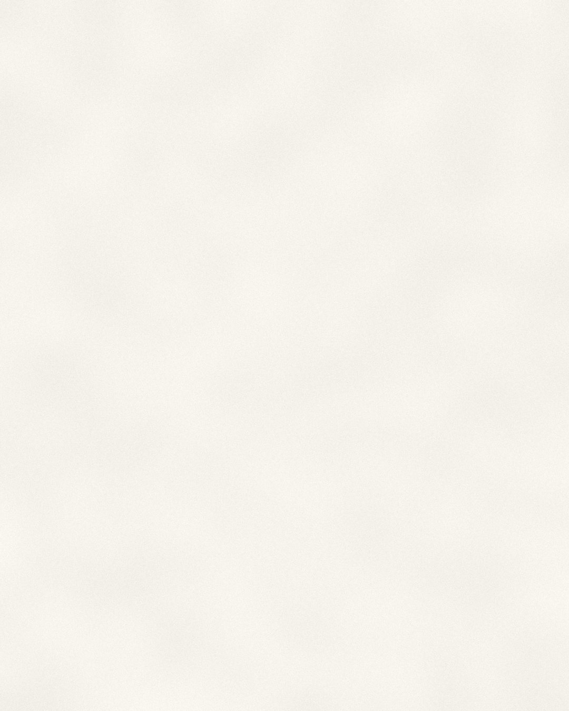
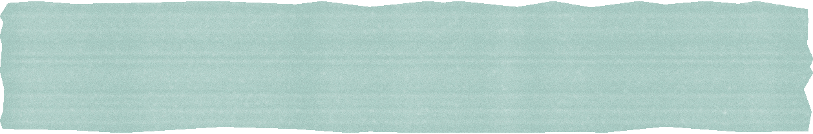

Passo 1 · Como começa

para começar.
Fale com um especialista
O primeiro contato é uma conversa com o nosso time.
Proposta personalizada
Desenvolvemos um programa sob medida para o seu time.
Implementação
Iniciamos com onboarding e primeiros atendimentos.
1